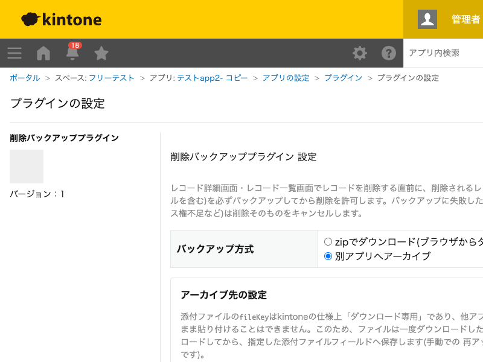

GovAppsプラグイン 安全性を確認できる無料kintoneプラグイン集
レコード詳細画面・レコード一覧画面でレコードを削除する直前に、削除されるレコードの内容 (添付ファイルを含む)を必ずバックアップしてから削除を許可するプラグインです。バックアップ方式は 「zipでブラウザにダウンロード」「別アプリへアーカイブ登録」のどちらかを選べます。バックアップに 失敗した場合(通信エラー・アクセス権不足など)は削除そのものをキャンセルするため、 「削除はできたがバックアップは無かった」という事態を防ぎます。
レコードを削除する操作をした瞬間に、レコードの内容(JSON)と添付ファイルをまとめたzipファイルがブラウザから自動的にダウンロードされます。設定は不要(既定の動作)で、万が一削除を後悔しても、手元に残ったzipから内容を確認できます。
公文書管理や監査対応など、削除されたレコードの記録を組織的に残しておきたい場合は「アーカイブ方式」を使います。アーカイブ先アプリを指定すると、削除のたびにそのアプリへ1レコードずつ自動登録され、レコードのJSON情報と添付ファイル(自動で再アップロードされたもの)が保存されます。
対応画面はPCのレコード詳細画面・レコード一覧画面のみです(レコード一覧からのモバイル削除操作自体が無いため、モバイルは対象外です)。一覧画面から複数レコードを削除した場合も、レコード1件ごとにバックアップ処理が行われます。
kintoneセキュアコーディングガイドラインに沿って実装時にチェックしています。特に重要な点は次のとおりです。
kintone.api()(内部向けラッパー)のみを使用します。ファイルのダウンロード・アップロードの2APIのみ、kintone公式ドキュメントでkintone.api()が非対応と明記されているためfetchを直接使いますが、宛先は常に同一オリジン(kintone自身)の相対パスのみで、外部ドメインへの通信は一切行いません。外部ライブラリも使用していません(ZIP生成・CRC-32も自前実装)。fileKeyはkintoneの仕様上「ダウンロード専用」で、他アプリのレコードへそのままコピーすることはできません。このため、ファイルは一度ダウンロードしたうえで自動的に再アップロードしてから保存します(手動での再アップロード操作は不要です)。innerHTMLではなくtextContentのみを使用しています。アーカイブ先アプリID・フィールドコードはアプリ管理者が選択した値のみを、文字列結合ではなくAPIのパラメーターとして渡しています。詳細な確認項目・確認日は下記GitHubのチェックリストに全項目を掲載しています。

このプラグインは、レコードが削除されるたびに実行されます。zip方式では、添付ファイル1件につき
ダウンロードAPI(GET /k/v1/file.json)を1回実行します。アーカイブ方式では、添付ファイル
1件につきダウンロード1回・再アップロード1回(POST /k/v1/file.json)に加え、
削除1件につきレコード登録API(POST /k/v1/record.json)を1回実行します。設定画面で
「フィールドを取得」を押したときのみ、アーカイブ先アプリのフィールド一覧取得API
(GET /k/v1/app/form/fields.json)を実行します。